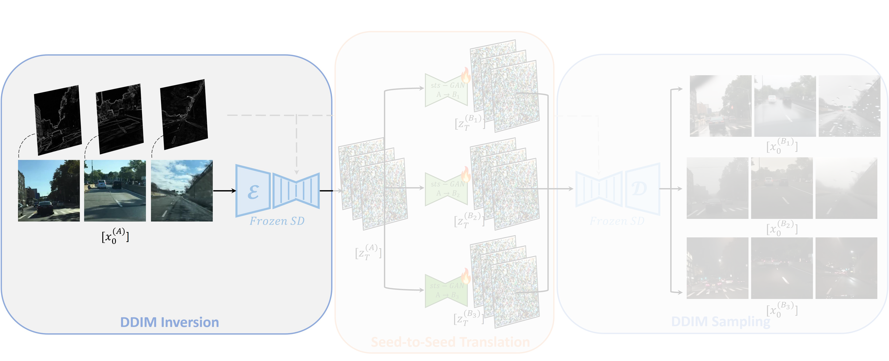
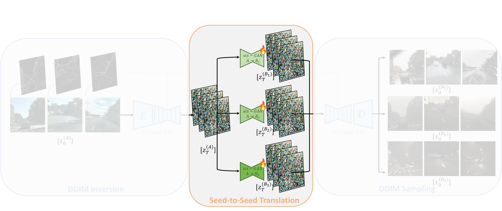
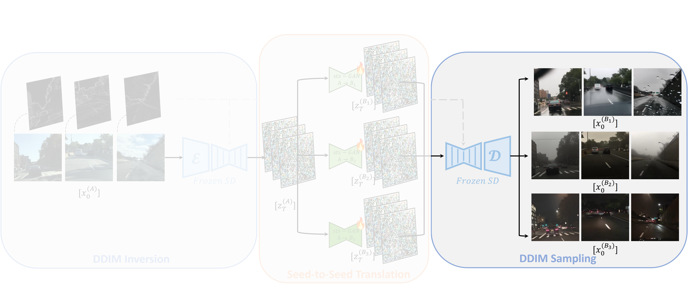
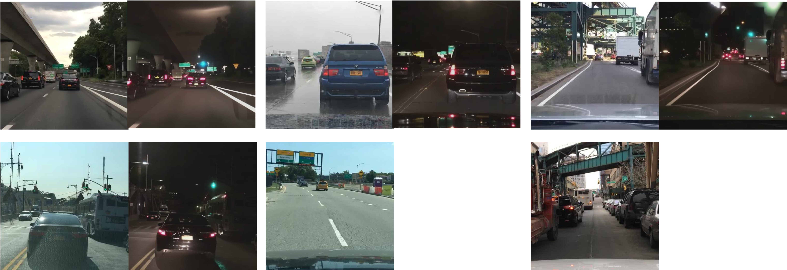
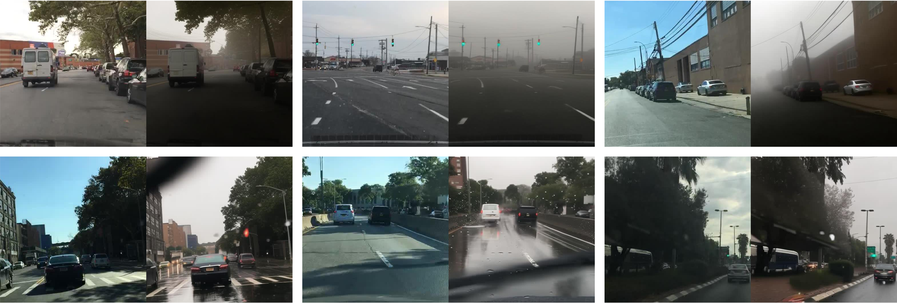
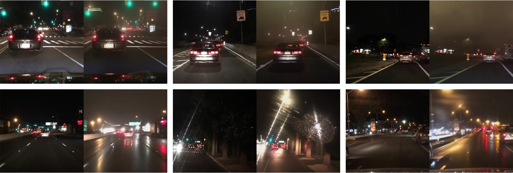
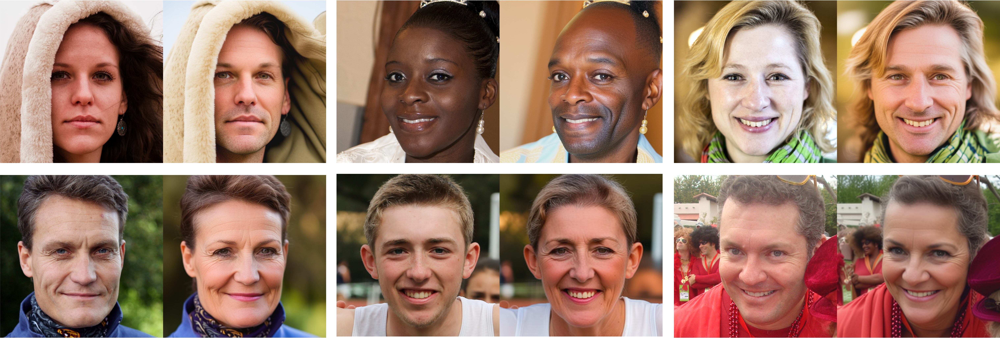
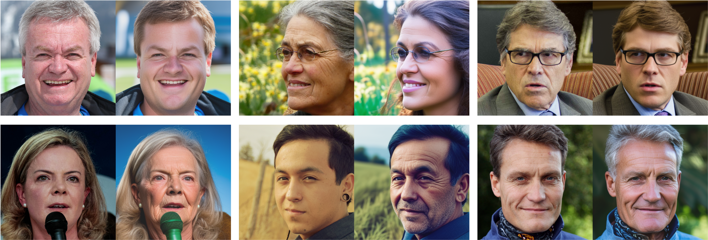
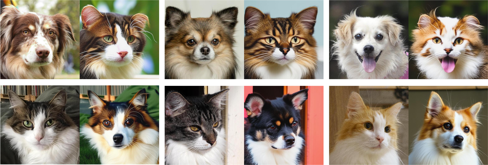

Seed-to-Seed:
Unpaired Image Translation in Diffusion Seed-Space
1 General Motors R&D
2 The Hebrew University of Jerusalem, Israel

We present StS-GAN, an unpaired image translation technique based on manipulating inverted seeds in a pre-trained diffusion model’s seed space.
Abstract
We introduce Seed-to-Seed Translation (StS), a novel approach that combines GANs and diffusion models (DMs) for unpaired Image-to-Image Translation. Our approach is aimed at global translations of complex automotive scenes, where close adherence to the structure and semantics of the source image is essential. We demonstrate that the semantic information encoded in the space of inverted latents (seeds) of a pretrained DM, dubbed as the seed-space, can be used for discriminative tasks, and leverage this information to perform image-to-image translation. Our method involves training an sts-GAN, an unpaired seed-to-seed translation model, based on CycleGAN. The translated seeds are used as the starting point for the DM's sampling process, while structure preservation is ensured using a ControlNet. We demonstrate the effectiveness of our approach for structure-preserving translation of complex automotive scenes, showcasing superior performance compared to existing GAN-based and diffusion-based methods. In addition to advancing the SoTA in automotive scene translations, our approach offers a fresh perspective on leveraging the semantic information encoded within the seed-space of pretrained DMs for effective image editing and manipulation.
StS-GAN Method

Step 1: Inverting a source image to a meaningful “seed” using a pre-trained diffusion model.

Step 2: Translating the “seed” using a task-optimized GAN to achieve target-domain attributes.

Step 3: Sampling the manipulated “seed” with a spatially constrained pre-trained diffusion model to generate the translated image.
Qualitative Results

Day-to-night translation. Dataset: BDD100K.

Weather translation at daytime. Top: clear-to-foggy. Buttom: clear-to-rainy. Dataset: BDD100k, DENSE.

Weather translation at nighttime. Top: clear-to-foggy. Buttom: clear-to-rainy. Dataset: BDD100k (clear, rain), DENSE (fog, rain).

Gender swap. Top: male-to-female. Buttom: female-to-male. Dataset: FFHQ.

Age manipulation. Top: to-younger. Buttom: to-older. Dataset: FFHQ.

Cat–Dog Bidirectional Translation. Top: dog-to-cat. Bottom: cat-to-dog. Dataset: AFHQ.
Citation
@inproceedings{Greenberg_2025_BMVC,
author = {Or Greenberg and Eran Kishon and Dani Lischinski},
title = {Seed-to-Seed: Unpaired Image Translation in Diffusion Seed Space},
booktitle = {36th British Machine Vision Conference 2025, {BMVC} 2025, Sheffield, UK, November 24-27, 2025},
publisher = {BMVA},
year = {2025},
url = {https://bmva-archive.org.uk/bmvc/2025/assets/papers/Paper_154/paper.pdf}
}
Contact